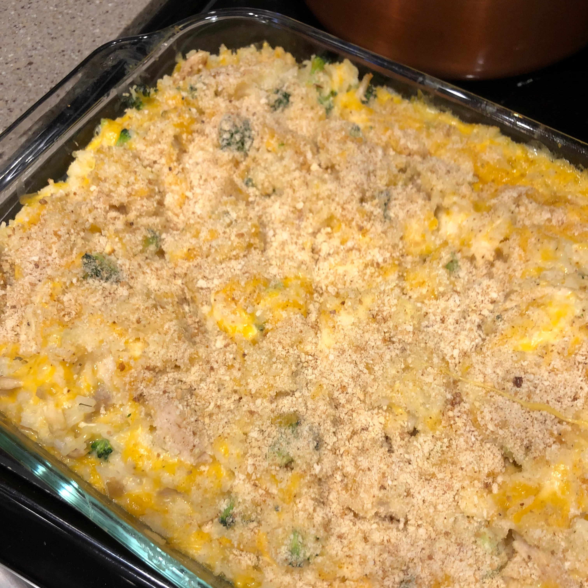

Home
Chicken, Brocolli & Rice

Description
If you wanto to prove how healthy you are, nothing beats this tip top for health, but extremely bland dish. Extremely healthy and balanced. Contains: fibre, protein and carbohydrates for an all round tasty and healthy meal
Truly a great addition to the health conscious dieter's arsenal.
Ingredients
- 1 (16 ounce) package frozen cauliflower
- (10 ounce) package frozen chopped broccoli, thawed
- 2 cooked boneless chicken breast halves, chopped
- 1 (16 ounce) jar Alfredo sauce
- 2 cups shredded Cheddar cheese, or to taste, divided
- 1 envelope onion soup mix
- 1 tablespoon minced garlic
Steps
- Place a steamer insert into a saucepan and fill with water to just below the bottom of the steamer. Bring water to a boil. Add cauliflower, cover, and steam until tender, about 5 minutes. Transfer cauliflower to a food processor; process using the shredding blade. Transfer cauliflower to the bottom of a 9x13-inch baking pan.
- Preheat the oven to 350 degrees F (175 degrees C).
- Refill steamer with water and return to a boil. Add broccoli, cover, and steam until tender, about 5 minutes. Arrange broccoli on top of the shredded cauliflower. Cover with cooked chicken.
- Combine Alfredo sauce, 1 cup Cheddar cheese, onion soup mix, and garlic in a saucepan over medium heat. Cook and stir until hot and melted, about 2 minutes. Spread sauce over the chicken. Top with remaining Cheddar cheese.
- Bake in the preheated oven until bubbly on top, 30 to 40 minutes.